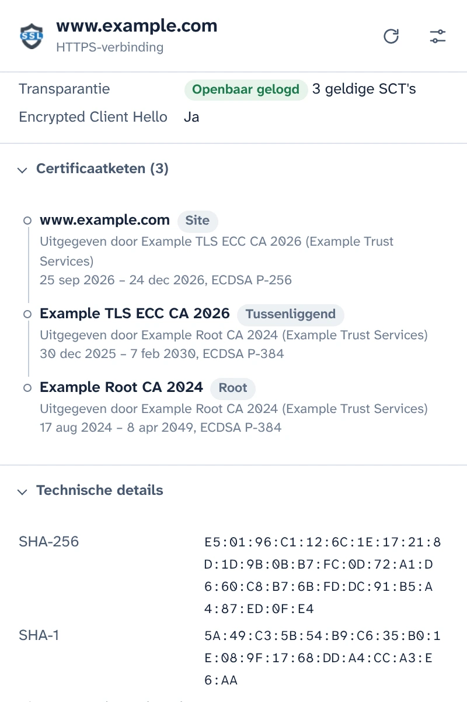
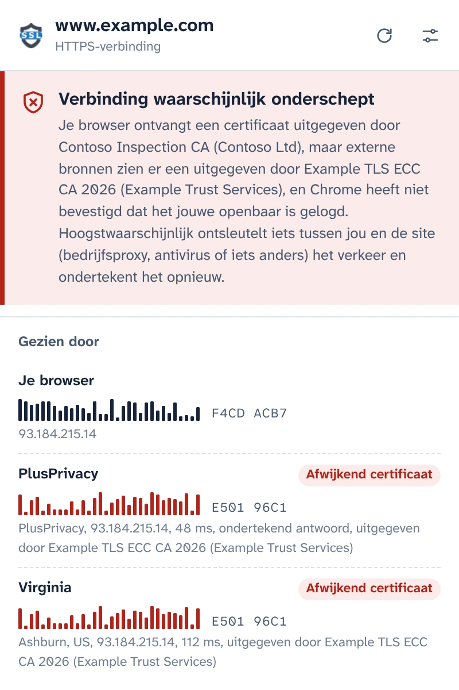
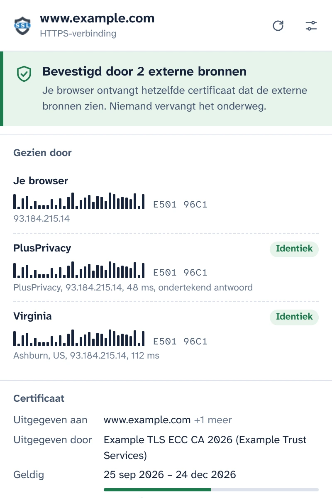
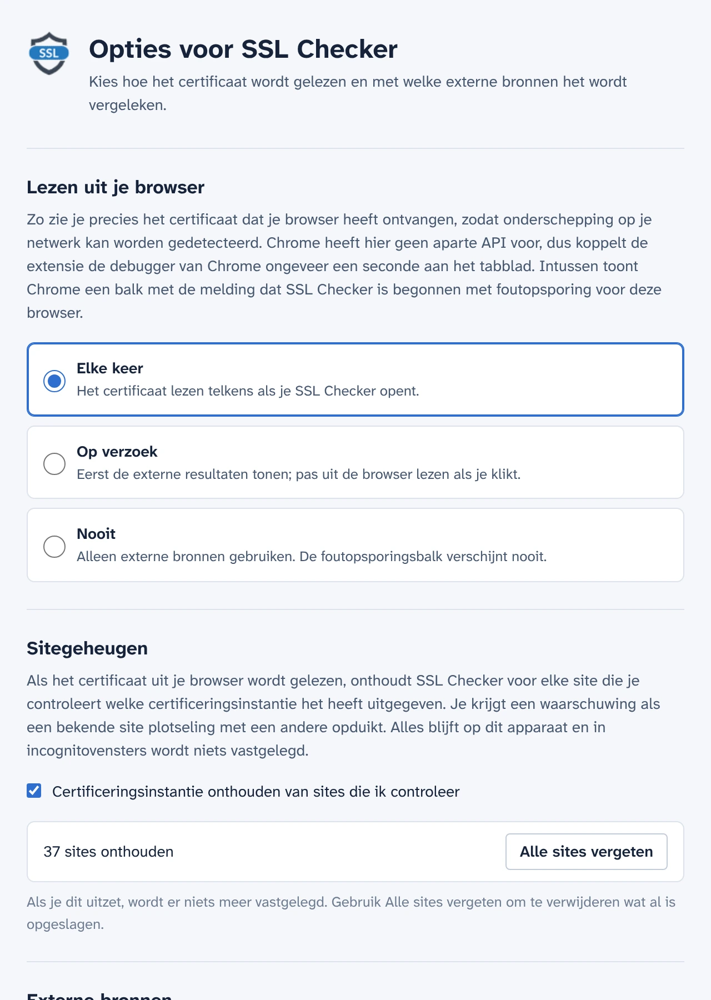

Bekijk het certificaat dat je browser echt heeft ontvangen
SSL Checker leest het certificaat van de site op je tabblad rechtstreeks uit Chrome en vergelijkt het met wat onafhankelijke notarissen vanaf een andere plek op internet zien. Als die twee verschillen, vervangt iets tussen jou en de site het certificaat.
Gratis en open source. Geen account, geen analytics.
Bevestigd door 2 externe bronnenVerbinding waarschijnlijk onderschept
Je browser ontvangt hetzelfde certificaat dat de externe bronnen zien. Niemand vervangt het onderweg.Je browser ontvangt een certificaat uitgegeven door Contoso Inspection CA, maar de externe bronnen zien er een uitgegeven door Example TLS ECC CA 2026.
- Je browser E501 96C1F4CD ACB7
- PlusPrivacy IdentiekAfwijkend certificaat E501 96C1
- Virginia IdentiekAfwijkend certificaat E501 96C1
Alle details van de verbinding
Wat Chrome voor dit tabblad heeft ontvangen, gelezen uit de browser zelf in plaats van opnieuw opgehaald van een server.
- Namen waarvoor het certificaat geldt, uitgever, geldigheid en resterende dagen, validatieniveau (DV, OV, EV)
- TLS-versie, sleuteluitwisseling inclusief post-quantumhybrides, codering en Encrypted Client Hello
- Certificate Transparency-status en de ondertekende certificaattijdstempels
- De volledige keten, vingerafdrukken en alle extensies. Kopieer de PEM of download de keten.

Ontdek HTTPS-onderschepping
Bedrijfsproxy's, antivirusprogramma's die HTTPS scannen en aanvallers op openbare wifi werken op dezelfde manier: ze ontsleutelen je verkeer en geven je browser een eigen certificaat. De pagina ziet er normaal uit en het slotje blijft staan.
SSL Checker vraagt de PlusPrivacy-notaris, en elke notaris die je toevoegt, welk certificaat dezelfde site hun toont. Zij maken verbinding vanaf een andere plek op internet, buiten alles om wat er op je netwerk zit, en de vingerafdrukken worden vergeleken:
- Overal hetzelfde certificaat: bevestigd.
- Het jouwe wijkt af en is niet openbaar gelogd: waarschijnlijk onderschept. SSL Checker noemt de certificeringsinstantie die het vervangende certificaat heeft uitgegeven en herkent bekende inspectieproducten.
- De bronnen zijn het onderling oneens: wordt zo gemeld, met wat elk geval kan betekenen.

Antwoorden die niemand onderweg kan vervalsen
Iets wat je verkeer onderschept, zou ook kunnen proberen te antwoorden namens een notaris. Dat lukt niet: de PlusPrivacy-notaris ondertekent elk antwoord met Ed25519, en SSL Checker controleert de handtekening, een willekeurig getal dat met elke vraag wordt meegestuurd en de site waarnaar het vroeg. Een vervalst, herhaald of omgeleid antwoord wordt geweigerd, en de pop-up meldt dat iets het heeft gewijzigd.
Draai je eigen notaris
De notaris is open source: een kleine Node.js-service voor Docker, beschermd tegen een stortvloed aan verzoeken en tegen verzoeken naar privénetwerken. Installeer hem op een willekeurige server, voeg in Opties zijn adres en sleutel toe, en zijn antwoorden worden op dezelfde manier gecontroleerd.

Jij bepaalt wanneer de debugger start
Chrome heeft geen extensie-API voor het certificaat van een geladen pagina. Daarom koppelt SSL Checker de debugger van Chrome ongeveer een seconde aan het tabblad terwijl het certificaat wordt gelezen, en toont Chrome intussen zijn foutopsporingsbalk. In Opties kies je wanneer dat gebeurt:
- Elke keer dat je de pop-up opent
- Op verzoek, met één klik in de pop-up
- Nooit: alleen de notarissen worden geraadpleegd
Onthoudt de sites die je controleert
SSL Checker onthoudt welke certificeringsinstantie elke site gebruikt en waarschuwt je als een bekende site plotseling met een andere opduikt, bijvoorbeeld op een nieuw wifinetwerk. Dit geheugen blijft op je apparaat, wordt nooit gebruikt in incognitovensters en kan in Opties worden uitgezet of gewist.

Ontworpen voor privacy
- Er wordt niets gelezen of verstuurd totdat je akkoord gaat in de pop-up.
- Alleen de hostnaam en poort van de site verlaten je apparaat, in de inhoud van een HTTPS-verzoek aan de notarissen die je gebruikt.
- De PlusPrivacy-notaris legt de gecontroleerde sites nergens vast. Je kunt hem uitzetten of alleen notarissen raadplegen die je zelf draait.
- Geen analytics, geen tracking, geen account. Het sitegeheugen verlaat je apparaat nooit.
- Ook deze website heeft geen analytics en laadt niets van andere servers.
POST /v1/cert
Content-Type: application/json
{
"host": "www.example.com",
"port": 443,
"nonce": "Xq3MpTb0vR9kLs2eWn5yZA"
}